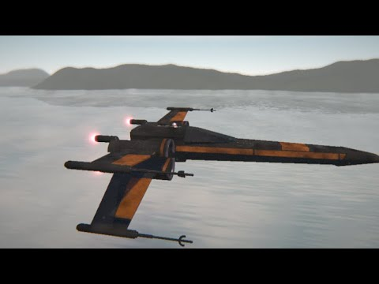

SHADERSStar Wars: X-Wing (360º)2023-09-10 · Updated 2023-09-10  GLSL Shadertoy Shader Following on from my previous post, I have used ShaderBoi to make a 360º YouTube video of my X-Wing shader. Enjoy! The GLSL shader source can be found here and here.